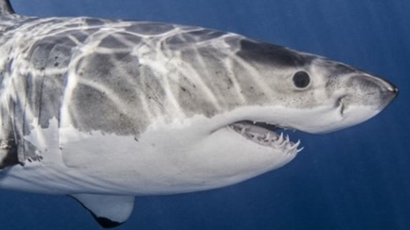
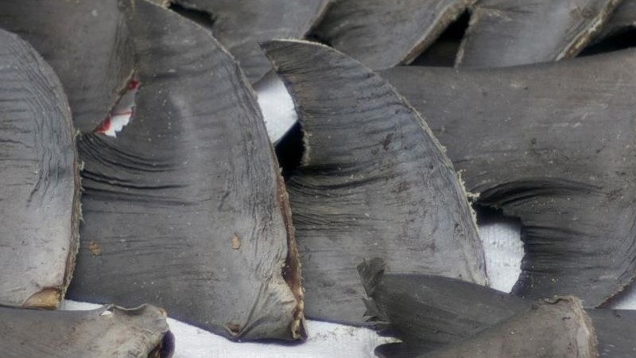
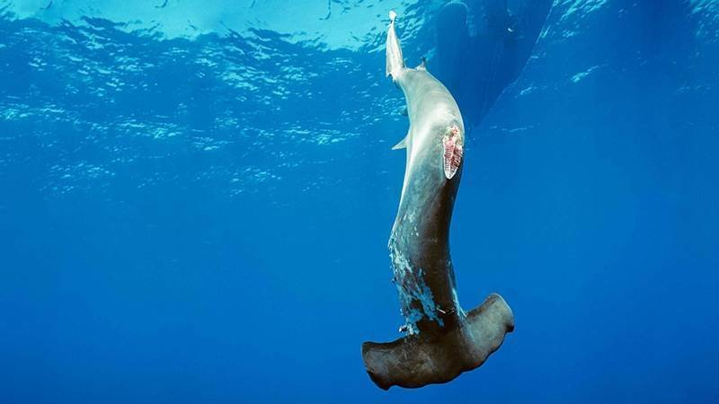

Informer – Sensibiliser – Agir Auprès du public et de tout acteur susceptible d’aider à la préservation des requins, raies et chimères. A.L.F.S est une association de lutte contre le Shark Finning. Passionnées par les animaux en général mais particulierement par les animaux marins depuis un voyage en Nouvelle Caledonie, nous souhaitons toucher le maximum de monde et les ralier a notre cause. En effet, le "Shark Finning", ou Peche à l'aileron de requin en français,est un desatre environnemental majeur. Chaque année, 38 à 100 millions de requins dans le monde serais tués pour leur ailerons. Notre rôle est aussi de vulgariser, de rassembler les données afin de permettre à chacun de mieux appréhender et comprendre ces espèces et leur place dans l’écosystème marin. Nous sommes, de plus, disponibles pour toute personne, association qui souhaite agir pour la protection des requins.

La pêche aux ailerons de requins est le shark finning, se référant à l'enlèvement et la rétention des nageoires de requins et le rejet de la carcasse en mer, seuls les ailerons sont prélevés. Le requin est le plus souvent encore en vie quand il est jeté dans l'eau. Effectivement, la chair de requin est considérée de faible valeur commerciale et cela ne vaut donc pas le coût du transport des corps des requins encombrants. N'importe quel requin est capturé indépendamment de son âge, taille ou espèce. Les palangres, utilisés dans les opérations de pêche aux ailerons de requins, sont la cause la plus importante des pertes dans les populations de requins dans le monde entier. Le shark finning est très répandu, et en grande partie non géré et non surveillé. Le shark finning a augmenté depuis l'aube du 21ème siècle en raison de la demande croissante pour les ailerons de requins (pour la soupe aux ailerons de requin et les remèdes traditionnels asiatiques), les techniques de pêche améliorées, et une économie de marché améliorée. En effet, 1 kg d'ailerons se vend plus de 500 €! Ainsi, les spécialistes des requins estiment que plus de 100 millions de requins sont tués pour leurs ailerons, chaque année. C'est une industrie de plusieurs milliards d'euros. Scientifiquement, cette pêche aux ailerons destructrice est un véritable obstacle à la collecte des données spécifiques aux espèces, données qui sont essentielles pour le suivi des captures et de la mise en oeuvre la gestion durable des pêches.

Un commerce très lucratif, qui attire aussi bien les pêcheries industrielles qu’artisanales. Ainsi les petites embarcations côtoient les grands navires de pêche et effectuent une pêche ciblée. Le requin est le plus souvent pêché aux lignes à main, aux sennes tournantes, à la ligne, aux filets maillants ou aux palangres. Dans la forme la plus barbare de la pratique, le requin pêché est hissé sur le pont, les pêcheurs tranchent à l’aide d’un grand couteau la nageoire dorsale, les nageoires pectorales et le lobe inférieur de la nageoire caudale. Le reste du corps ayant une moindre valeur commerciale, le requin souvent encore vivant est rejeté à la mer, amputé de ses nageoires donc incapable de se mouvoir afin d’oxygéner ses branchies, et périt d’une lente asphyxie. Cette pratique engendre un « gaspillage considérable » étant donné que seulement 7 % de la masse totale du requin est exploitée.
